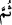

şâhidlik üstüne şâhidlik etmek ve yemin etmek câizdir. Fakat bunların hiçbiri hadde câiz
değildir.
“Sonra (bunu isbat için)” o kadınlara isnâd edilen suçta onlar aleyhine şâhidlik
edecek “dört şâhid getiremeyenlere seksener sopa vurun” yâni nâmuslu kadınlara zinâ
isnâdında bulunup sonra bunu isbat için dört şâhid getiremeyenlerin her birine hür iseler
seksen, köle iseler kırk sopa vurun. Çünkü şâhidleri getirmekten âciz kalmakla yalan ve
iftirâları ortaya çıkmıştır.
Diğer hadlerde olduğu gibi bunda da kadınların şâhidliği kabul edilmez. __WORD__ (sonra)
kelimesi şâhidleri getirmekte gecikmenin câizliğini hissettirmekte, olumsuzluk edâtı
olan __WORD__ ise şâhidleri getirmekten âciz kalmaya işâret etmektedir.
Ebû Hanîfe (r.h.)’a göre zinâ fiili yerine getirilirken dört şâhidin bir araya toplanıp
birlikte şâhidlik etmeleri gerekir. Yâni bir mecliste gelip hazır olmaları gerekir. Ayrı
ayrı gelirlerse hepsi de iftirâcı (kâzif) sayılırlar. “Dört şâhid” ifâdesi delâlet
etmektedir ki şâhidler üç kişi olursa yeterli sayıda olmadıkları için onlara had tatbik
edilmesi gerekir. Yine şâhidler âmâ olursa veya önceden zinâ isnâdından dolayı
kendilerine had cezâsı uygulanmışsa yahut sadece birisine had cezâsı uygulanmışsa ya
da içlerinden birisi köle ise bu gibi kimseler şâhidlik ehliyetine sâhip olmadıklarından
hepsine had tatbik edilir.
Zinâ isnâdında bulunulan kimse daha önce de zinâ ettiği bilinen biri ise iftirâcı ta‘zir
olunur, had tatbik edilmez. Ancak zinâ isnâdında bulunulan kimse bu özelliği ile meşhur
olmuşsa iftirâcıya ne ta’zir ne de had uygulanır.
Zinâ isnâdında bulunan erkeğe, zinâ eden erkeğe vurulduğu gibi sopa vurulur. Ancak
kürk ve fuzûli olanı dışında elbiseleri çıkarılmaz. Zinâ isnâdında bulunan kadın, sopa
vurulması konusunda zinâ eden kadın gibidir.
En şiddetli vuruş ta’zir cezâsının tatbiki sırasındadır. Zinâ haddi biraz daha hafif,
şarab haddi daha hafif olmalıdır. En hafif ise zinâ isnâdında bulunana tatbik edilir.
Çünkü ona had uygulanmasına gerektiren sebebin hem doğru hem de yalan olma ihtimâli
vardır. Ancak o, nâmusları koruma altına alma amacıyla cezâlandırılır.
Kazf haddi/cezâsı, zinâ ve içki içmenin cezâsından daha özeldir. Çünkü zinânın cezâsı
Kur’an’da sâbittir. İçki içmenin cezâsı da sahâbe kavline göre kesinlik kazanmıştır.
Kazf haddi ise, gören kişinin doğru sözlü olduğu ihtimâline dayanmaktadır.
Haddin kendisi nasla sâbit olmuş olsa da ancak kendisine zinâ isnad edilen muhsan
bir kimsenin talebiyle tatbik edilir. Çünkü o kendisinden ârı uzaklaştırma konusunda
haddin uygulanmasında hak sâhibidir. Bu talebin sözle olması gerekir. Hatta dilsiz
birine zinâ isnâdında bulunulsa, o da işâretle haddin uygulanmasını istese had gerekmez.
Zinâ isnad edilen kimsenin, isnad sırasında zinâ isnad edenle birlikte bulunup
bulunmaması arasında fark yoktur. Zinâ isnad edilen kimsenin, şâhidler şehâdet edip had
sâbit olmadan önce haddin tatbikinden vazgeçmesi câizdir. İmamın da zinâ isnad edileni
öfkesini tutmaya teşvik etmesi ve henüz had sâbit olmadan ona Allah için bu işten